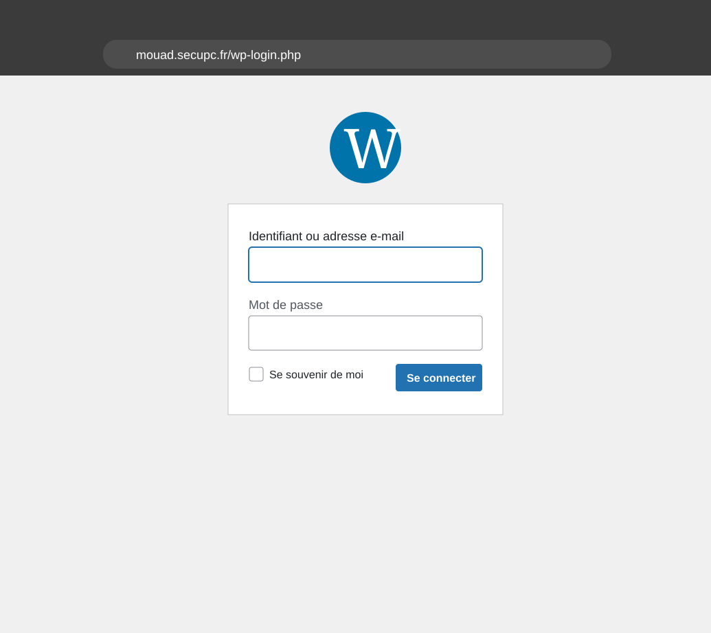
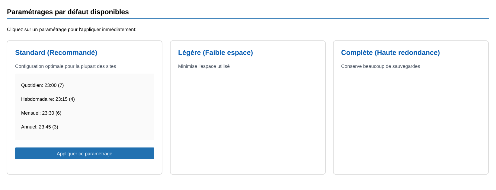

CoolBackup8 - Mettre à disposition un service informatique
Stage 2ème année - Plugin WordPressCette page ne concerne que le service mis à disposition. Elle montre ce que l'utilisateur peut ouvrir et utiliser dans WordPress.
- accès depuis l'administration WordPress,
- tableau de bord du plugin,
- actions rapides de sauvegarde,
- paramétrages prédéfinis.



WordPressInterface adminMise à dispositionParamétrageTests fonctionnels